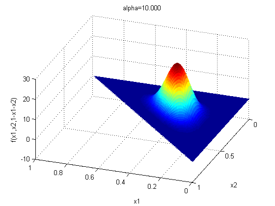
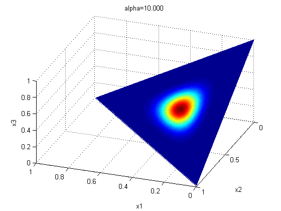

Plot a Dirichlet distribution in 3d
alphaVals = [10];
for alpha=alphaVals(:)'
alphas = alpha*ones(1,3);
x1 = linspace(0,1,101);
x2 = linspace(0,1,101);
[X1,X2] = ndgrid(x1,x2);
X3 = 1 - X1 - X2;
bad = (X1+X2 > 1); X1(bad) = NaN; X2(bad) = NaN; X3(bad) = NaN;
bad = (X1+X2 < 0); X1(bad) = NaN; X2(bad) = NaN; X3(bad) = NaN;
betaConst = exp(sum(gammaln(alphas))-gammaln(sum(alphas)));
F = (X1.^(alphas(1)-1) .* X2.^(alphas(2)-1) .* X3.^(alphas(3)-1)) / betaConst;
Freal = real(F);
bad = (F ~= Freal);
F(bad) =NaN;
figure, surf(X1,X2,F,'EdgeColor','none');
xlabel('x1'); ylabel('x2'); zlabel('f(x1,x2,1-x1-x2)');
view(-160,40);
title(sprintf('alpha=%5.3f', alpha))
figure, surf(X1,X2,X3,F,'EdgeColor','none');
xlabel('x1'); ylabel('x2'); zlabel('x3');
view(-160,40);
title(sprintf('alpha=%5.3f', alpha))
end
 